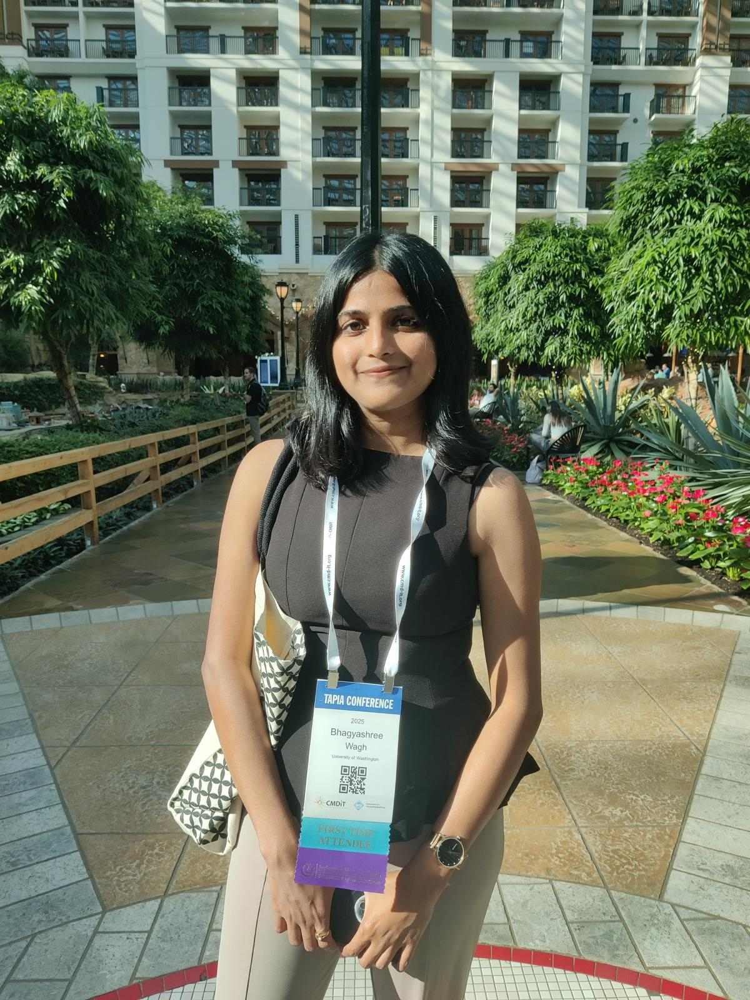

Education


Master of Science in Information Management


Bachelor of Engineering in Electronics & Telecommunications
Hi, I'm Bhagyashree, a Data Engineer and recent graduate of the University of Washington (UW), where I completed my Master's in Information Management with a specialization in Data Science. I graduated in June 2026 and am actively exploring full-time opportunities in data engineering and ML infrastructure. I'd love to connect if you are building something interesting in that space.

Before any of this, I completed my Bachelor of Engineering in Electronics and Telecommunications at the University of Mumbai, graduating with a GPA of 3.96. I also completed a minor's degree in Data Analytics alongside my engineering degree, covering topics like Data Warehousing, Applied Statistics, Descriptive and Predictive Analytics, Big Data Analytics, and Business Analytics for Industries. That combination of engineering foundations and data thinking shaped a lot of how I approach problems today. During undergrad, I also led editorial work for clubs I genuinely cared about: one focused on teaching Java and coding to undergraduates, and another centered on community impact initiatives like blood donation drives, tree plantation, and beach cleaning.
My first industry experience came through an internship at Reliance Infrastructure, where I worked on backend systems for the real estate operations team. Through query optimization and caching, I brought down API response times by 25%, which meant the backend was returning data to the real estate ops team noticeably faster. I also got to present my findings to senior leadership, which was a formative experience early in my career.
Building at scale — ZS AssociatesAfter graduating, I spent over two years as a Data Engineer at ZS Associates, working on large-scale healthcare and oncology analytics for pharma clients including AstraZeneca. My work involved building and owning ETL pipelines on AWS to ingest multi-terabyte healthcare datasets, automating manual workflows using Airflow with schema-drift monitoring and SLA-based failure alerts, and optimizing Redshift schemas for more than ten high-volume fact tables, which brought average query latency down from 15 seconds to 6 seconds. I also built XGBoost-based demand forecasting models that improved forecast accuracy by 12% over baseline statistical methods, and delivered Tableau dashboards for pharma stakeholders covering brand performance, market opportunity, drug persistence, and compliance metrics. Watching data directly shape the decisions behind oncology drug launches made me want to go deeper, and that is what pushed me toward graduate school.
Graduate school at UWAt the University of Washington, I invested in a curriculum that stretched across both the theory and practice of data science. Highlights include Advanced Machine Learning through the Paul G. Allen School of Computer Science, along with Data Science, Building and Applying LLMs, Cloud Computing and AI, Cybersecurity Foundations, Business Intelligence, Relational Database Management Systems, and Social Media Data Mining. Across two years, the coursework consistently pushed me to think about data problems from multiple dimensions, not just the engineering side.
Alongside coursework, I served as a Data Engineering Research Assistant at the UW eScience Institute, contributing to open-source projects led by research scientists. On the infrastructure side, I architected AWS infrastructure for deploying a containerized Django application supporting ML workloads, and automated 95% of deployment workflows using Pulumi and GitHub Actions CI/CD. I also built an end-to-end Azure data pipeline to ingest AI usage logs from LLMaven, an open-source LLM gateway built on LiteLLM, processing over 13,000 research sessions and visualizing model usage patterns, cost trends, and session behavior for the NAIRR initiative. Additionally, I deployed a FastAPI onboarding service to Hugging Face Spaces as part of the NAIRR RSE Plugins Sandbox Demo, a US national initiative providing researchers with AI computing resources.
I also served as a Graduate Teaching Assistant at UW's Global Innovation Exchange (GIX) for courses in Planning and Managing Hardware and Software Development, Hardware and Software Lab, and Programming for Digital and Physical User Interfaces.
Applied MaterialsOver the summer of 2025, I interned at Applied Materials in the San Francisco Bay Area. I built a recommendation system for their semiconductor spare parts catalog. A big challenge was the cold start problem: many parts had little to no purchase history, so the system had nothing to learn from and would return no recommendations at all. Solving that brought catalog coverage up by 28% and cut zero-recommendation parts by 18%. The whole thing shipped to their customer-facing website by the end of the summer.
CloudforceOne of the highlights of this past year started at a hackathon organized by Cloudforce. I built a website powered by AI agents and presented it directly to the CEO, which led to a conversation about joining the team. I received an offer as an AI Engineer Intern and would be based at their national hub in Washington, D.C., and it is what I am currently looking forward to.
Research and publicationsI co-authored a paper published on arXiv that asked a simple but interesting question: can Mamba, a newer kind of AI language model, produce meaningful sentence representations without any fine-tuning? Unlike transformers, which look back at every word they have seen, Mamba compresses everything into a single evolving state as it reads. The question was whether that state alone is enough to capture what a sentence means. The answer was no, and the paper identifies exactly why it falls short. I also worked on a project studying how well RAG systems actually retrieve the right answers when given a question, and during undergrad, I published work on using sensors to automate irrigation for farms.
Leadership and communityI was selected as a Richard Tapia Scholar, one of eight students from the UW Information School chosen to attend the Tapia Celebration of Diversity in Computing 2025 in Dallas, fully sponsored by the UW iSchool IDEAS program. I represented the iSchool as an ambassador at one of the most impactful computing conferences focused on diversity in tech. I also served as a Senator for the Graduate and Professional Student Senate (GPSS) at UW, as a Student Leadership Council Board Member at the UW iSchool, and as President of a mental health advocacy club on campus. These roles reinforced something I believe strongly: that being a good engineer and showing up for your community are not separate things.
Outside of workI like to read in my free time, and there is a line I keep coming back to: we don't grow when things are easy; we grow when we're challenged. I carry that with me to every project, every role, and every new room I walk into.
Master of Science in Information Management
Bachelor of Engineering in Electronics & Telecommunications